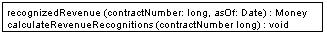

| Home | Articles | Talks | Links | Contact Me | ISA | ThoughtWorks |
Organize Business Logic by procedures that carry out what needs to be done in a transaction

Most business applications can be thought of as a series of transactions. A transaction may view some information organized in a particular way. Another will make changes the database. Each interaction between a client system and a server system contains a certain amount of logic. In some cases this can be as simple as just displaying some information that's in the database. In others this may involve many steps of validations, and calculations.
A Transaction Script organizes all this logic primarily as a single procedure, making calls directly to the database or through a thin database wrapper. Each transaction will have its own Transaction Script, although common subtasks can be broken out into sub-procedures. Each Transaction Script is a public method on a class.
With Transaction Script this logic is primarily organized by the transactions that you do with the system. If your need is to book a hotel room, the logic to check the room is available, calculate the rates, and update the database is found inside the book hotel room procedure.
For simple cases, there isn't really much to say about how you organize this. Of course, like any other program, you should structure the code into modules in a way that makes sense. Unless the transaction is particularly complicated that won't be too much of a challenge. One of the benefits of this approach is that you don't need to worry about what other transactions are doing. Your task is to get the input, interrogate the database, munge, and save results to the database.
Where you put the Transaction Script will depend on how you organize your layers. It may be in a server page, CGI script, distributed session object. Whatever your architecture there is some transaction controller that initiate everything that goes on. For a simple Transaction Script the business logic can be placed in that transaction controller module, either as inline code within the handling of the request, or (better) broken into some separate routines.
The challenges for implementing Transaction Script come in two forms which often come together: complicated transaction logic and duplicated logic.
You know you have complicated transaction logic when the customer says something like "for this use case step, here's the ten pages that explains what goes on". At this point the most important thing to do is get any complicated code isolated from where it fits into your architecture. Create a module that is has no dependencies on the upper layers of the system. The Transaction Script will know about the database, or some Gateways. Your transaction controller will then call this module at appropriate points. The module might be a single routine, or a bunch of routines.
Separating the business logic from the layers will make it easier to modify and test the business logic. It's easier to modify because when you're modifying the logic, you don't have to worry about the issues that come from the module's place in your layers. Also you can address layering issues without worrying about the details of the business logic. It's more testable because the module can be tested outside the confines of your layered architecture. This may improve the cycle time of development process quite significantly.
You can organize your Transaction Scripts into classes in two ways. One is to have one Transaction Script per class. In this case your classes are commands and should have a common Layer Supertype that defines the execute method. The advantage of this is that it allows you to manipulate instances of scripts as objects at runtime, although I've rarely seen people need to do this with the kinds of systems that use Transaction Scripts to organize domain logic. The alternative is to have several Transaction Scripts in a single class, where each class defines a subject area of related Transaction Scripts. This is the simpler, and more common technique. Of course you can ignore classes completely in many languages and just use global functions. However you'll often find that instantiating a new object helps contain threading issues as it makes it easier to isolate data.
The glory of Transaction Script is its simplicity. Organizing logic this way is natural for applications with only a small amount of logic and implies very little overhead: both in performance and in understanding.
But as the business logic gets more complicated it gets progressively harder to keep the business logic in a well designed state. One particular problem to watch carefully for is duplication between transactions. Since the whole point is handle one transaction, if there's common code then it tends to be duplicated.
Careful factoring can alleviate many of these problems, but more complex business domains really need to build a Domain Model. A Domain Model will give you much more options in structuring the code, increasing readability and decreasing duplication.
It's hard to quantify the cut over level, especially when you're more familiar with one than the other. You can refactor a Transaction Script oriented design to a Domain Model style of design. But it's a harder change than it would otherwise need to be, so an early shot is often the best way to move forwards.
But however much of an object bigot you become, don't rule out Transaction Script. There are a lot of simple problems out there, and a simple solution will get you up and running much faster.
For this pattern, and the others that talk about domain logic, I'm going to use the same problem. To avoid typing the problem statement several times, I'm just putting it in here.
Revenue recognition is a common problem in business systems, it's all about when you can actually count the money you receive on your books. If I sell you a cup of coffee, it's a simple matter. I give you the coffee, I take the money, and I can count the money to the books that nanosecond. But for many things it gets complicated. Say you pay me a retainer to be available that year. Even if you pay me some ridiculous fee today, I may not be able to put it on my books right now because the service is to be performed over the course of a year. One approach might be that I should only count one twelfth of that fee for each month over the course of the year, since you might pull out of the contract after a month and you realize that writing has atrophied my programming skills.
The rules for revenue recognition are many, various, and volatile. Some are set by regulation, some by professional standards, some by company policy. Tracking revenue ends up being quite complex problem.
Not that I fancy delving into the complexity right now. Instead we'll imagine a company that sells three kinds of products: word processors, databases, and spreadsheets. The rules are that when you sign a contract for a word processor, you can book all the revenue right away. If it's a spreadsheet you can book one third today, on third in sixty days and one third in ninety days. If it's a database you can book one third today, one third in thirty days, and one third in sixty days. There is no basis for these rules other than my own fevered imagination. I'm told that the real rules are equally rational.

Figure 1: A conceptual model for simplified revenue recognition. Each contract has multiple revenue recognitions that indicate when the various parts of the revenue should be recognized.
This example uses two transaction scripts: one to calculate the revenue recognitions for a contract, and the other to tell us how much revenue on a contract has been recognized by a certain date. We'll make the unrealistic simplifying assumption that all contracts are only about one product.
The database structure has three tables: one for the products, one for the contracts, and one for the revenue recognitions.
CREATE TABLE products (ID int primary key, name varchar, type varchar) CREATE TABLE contracts (ID int primary key, product int, revenue decimal, dateSigned date) CREATE TABLE revenueRecognitions (contract int, amount decimal, recognizedOn date, PRIMARY KEY (contract, recognizedOn))
The first script calculates the amount of recognition due by a particular day. I can do this in two stages, the first part to select the appropriate rows in the revenue recognitions table, the second part to sum up the amounts.
Many Transaction Script designs have Transaction Scripts that operate directly on the database, putting SQL code into the procedure. Here I'm using a simple Table Data Gateway to wrap the SQL queries. Since this example is so simple, I'm using a single gateway rather than one for each table. I can define an appropriate find method on the gateway.
class Gateway...
public ResultSet findRecognitionsFor(long contractID, MfDate asof) throws SQLException{
PreparedStatement stmt = db.prepareStatement(findRecognitionsStatement);
stmt = db.prepareStatement(findRecognitionsStatement);
stmt.setLong(1, contractID);
stmt.setDate(2, asof.toSqlDate());
ResultSet result = stmt.executeQuery();
return result;
}
private static final String findRecognitionsStatement =
"SELECT amount " +
" FROM revenueRecognitions " +
" WHERE contract = ? AND recognizedOn <= ?";
private Connection db;
I then use the script to sum up based on the result set passed back from the gateway.
class RecognitionService...
public Money recognizedRevenue(long contractNumber, MfDate asOf) {
Money result = Money.dollars(0);
try {
ResultSet rs = db.findRecognitionsFor(contractNumber, asOf);
while (rs.next()) {
result = result.add(Money.dollars(rs.getBigDecimal("amount")));
}
return result;
} catch (SQLException e) {throw new ApplicationException (e);
}
}
For calculating the revenue recognitions on an existing contract, I use a similar split. The script on the service carries out the business logic.
class RecognitionService...
public void calculateRevenueRecognitions(long contractNumber) {
try {
ResultSet contracts = db.findContract(contractNumber);
contracts.next();
Money totalRevenue = Money.dollars(contracts.getBigDecimal("revenue"));
MfDate recognitionDate = new MfDate(contracts.getDate("dateSigned"));
String type = contracts.getString("type");
if (type.equals("S")){
Money[] allocation = totalRevenue.allocate(3);
db.insertRecogntion
(contractNumber, allocation[0], recognitionDate);
db.insertRecogntion
(contractNumber, allocation[1], recognitionDate.addDays(60));
db.insertRecogntion
(contractNumber, allocation[2], recognitionDate.addDays(90));
} else if (type.equals("W")){
db.insertRecogntion(contractNumber, totalRevenue, recognitionDate);
} else if (type.equals("D")) {
Money[] allocation = totalRevenue.allocate(3);
db.insertRecogntion
(contractNumber, allocation[0], recognitionDate);
db.insertRecogntion
(contractNumber, allocation[1], recognitionDate.addDays(30));
db.insertRecogntion
(contractNumber, allocation[2], recognitionDate.addDays(60));
}
} catch (SQLException e) {throw new ApplicationException (e);
}
}
Notice I'm using Money to carry out the allocation. When splitting an amount three ways it's very easy to lose a penny.
The Table Data Gateway provides support on the SQL. Firstly there's a finder for a contract.
class Gateway...
public ResultSet findContract (long contractID) throws SQLException{
PreparedStatement stmt = db.prepareStatement(findContractStatement);
stmt.setLong(1, contractID);
ResultSet result = stmt.executeQuery();
return result;
}
private static final String findContractStatement =
"SELECT * " +
" FROM contracts c, products p " +
" WHERE ID = ? AND c.product = p.ID";
And secondly there's a wrapper for the insert.
class Gateway...
public void insertRecogntion (long contractID, Money amount, MfDate asof) throws SQLException {
PreparedStatement stmt = db.prepareStatement(insertRecognitionStatement);
stmt.setLong(1, contractID);
stmt.setBigDecimal(2, amount.amount());
stmt.setDate(3, asof.toSqlDate());
stmt.executeUpdate();
}
private static final String insertRecognitionStatement =
"INSERT INTO revenueRecognitions VALUES (?, ?, ?)";
In a Java system, the recognition service might be a regular class, or it could be a session bean.
As you compare this to the example in Domain Model you probably think, unless your mind is as twisted as mine, that this is much simpler. The harder thing to imagine is what happens as the rules get more complicated. Typical revenue recognition rules get very involved, varying not just by product but also by date (if the contract was signed before April 15 then this rule applies....) It's difficult to keep a coherent design with Transaction Script once things get that complicated, which is why object bigots like me prefer using a Domain Model in those circumstances.
 |  |